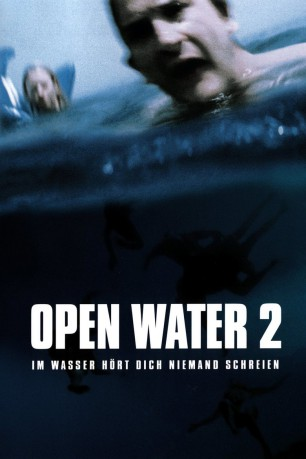

#4685 Open Water 2
Alternativ: Open Water 2: Adrift
 
 IMDB-Wertung: 5.1 / 10
IMDB-Wertung: 5.1 / 10  Metascore: 0
Metascore: 0 
Sechs Freunde freuen sich auf ihre gemeinsame Tour mit einer Luxusjacht in Mexiko: Amy (Susan May Pratt), ihr Ehemann James (Richard Speight Jr.), das Paar Zach (Niklaus Lange) und Lauren (Ali Hillis) sowie Dan (Eric Dane) und dessen neue Freundin Michelle (Cameron Richardson). An Board herrscht schnell eine ausgelassene Stimmung, und schon bald schwimmen alle vergnügt im offenen Meer. Doch der Gruppe ist ein fataler Fehler unterlaufen: Niemand hat daran gedacht, die Bootsleiter herunter zu lassen. Trotz ausgiebiger Versuche ist es den Freunden unmöglich, die glatte Yachtwand zu erklettern...
Jahr: 2006
Dauer: 94 Minuten
FSK: 12
Land: Deutschland Studio: UFATonspuren: DTS - ,
Untertitel: Deutsch,
Auflösung: 1080p (1920x816) Größe: 9994 MB
Genre: Thriller, Horror, Drama, Abenteuer
Regisseur: Hans Horn
Drehbuch: Carl Lund
Soundtrack:
Darsteller:
 Susan May Pratt als Amy
Susan May Pratt als Amy Richard Speight Jr. als James
Richard Speight Jr. als James Ali Hillis als Lauren
Ali Hillis als Lauren- Cameron Richardson als Michelle
 Eric Dane als Dan
Eric Dane als Dan- Wolfgang Raach als Amy's Father
- Kelly Wagner als Erica - Zach's Sister
- Niklaus Lange als Zach
- Alexandra Raach als Amy as a Little Girl
- Alfred Cuschieri als Old Fisherman
- Mattea Gabarretta als Baby Sara
- Luca Gabaretta als Baby Sara
- Christine Spasojevic als Party Boat Girl
- Dawn Frendo als Party Boat Girl
- Charlie Formosa als Fisherman / Busstop
- Alfredo Cutajar als Marina Fisherman
- Joe Formosa als Marina Fisherman
- Manuel Custo als Marina Fisherman
- Furto Grima als Marina Fisherman
- Costanzo Galea als Marina Fisherman
- Jeremy Formosa als Dodge Passenger
- Lorry Formosa als Dodge Passenger
- Edel Cauchi als Dodge Passenger
- Jolene Grima als Dodge Passenger
- Louis Formosa als Bus Passenger
- Frankie Cachia als Bus Passenger
- Mario Attard als Bus Passenger
- Gejtu Attard als Bus Passenger
- Laurence Piscopo als Bus Passenger
- Anthony Vassallo als Bus Passenger
Datei: X:\3-Trilogie(N-Z)\Open Water\Open Water 2 (2006, FSK12, 1920x816).mkv seit 03.11.2016
Festplatte: HD Collection-3(N-Z)-6(A-Z)
 Alle Filme aus Gruppe '3-Trilogie(N-Z)\Open Water'
Alle Filme aus Gruppe '3-Trilogie(N-Z)\Open Water'